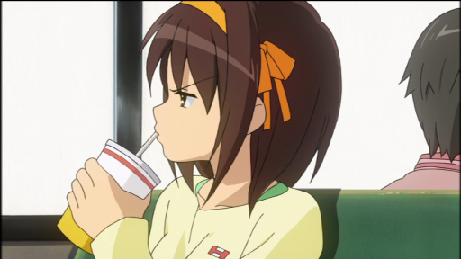
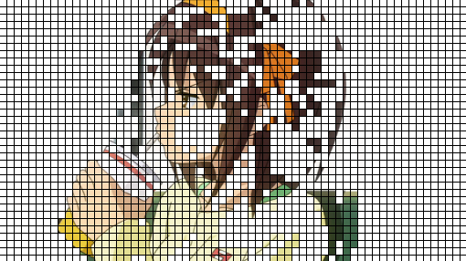
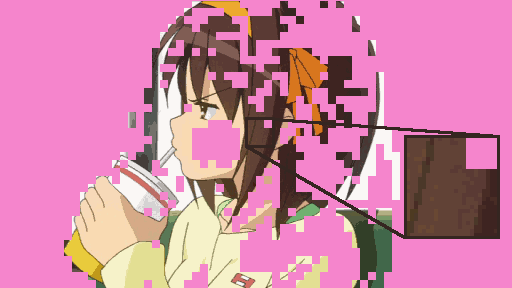
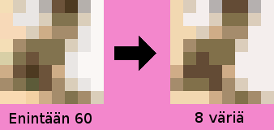
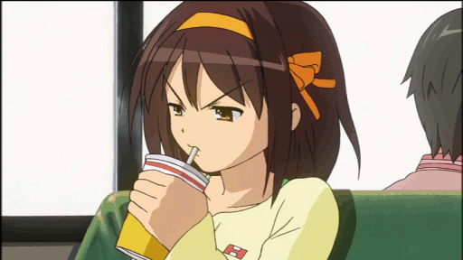
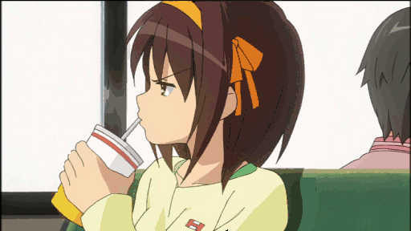

Kuvien l‰hteen‰ on piirrosanimoitu TV-sarja The Melancholy of Haruhi Suzumiya. Pakkausmenetelm‰n eri vaiheita on simuloitu karkeasti GIMP-kuvank‰sittelyohjelmalla, jonka toiminnoista on k‰ytetty hyv‰ksi muun muassa kuvatasojen erilaisuuden vertailua sek‰ indeksoidun paletin muodostamista; molemmat ovat kyseiseen ohjelmaan sis‰‰nrakennettuja, ei itse tekemi‰ni.
| 1a. Edellinen kuva, pakkaamaton RGB 24 bitti‰/pikseli | 1b. Nykyinen kuva, pakkaamaton RGB 24 bitti‰/pikseli |
|  | |
| 2. Muuttuneet 8 x 8 pikselin lohkot (ruudukko mustalla viivalla merkkaa lohkojen reunoja) |
3. Lohkoille muodostetaan ja sovitetaan yhteinen paletti (t‰ss‰ 60 v‰ri‰) |
|  |  |
| 4. V‰rien m‰‰r‰‰ v‰hennet‰‰n lohkokohtaisesti tarvittaessa | |
|  | |
| 5. Pakattu edellinen kuva, indeksoitu 256 v‰rin paletti | 6. Pakattu edellinen kuva + nykyisen muuttuneet alueet pakattuina. |
|  |  |
The Melancholy of Haruhi Suzumiya © 2006-2007 Nagaru Tanigawa / Noizi Ito / member of SOS
17.10.2008 Artturi Tilanter‰